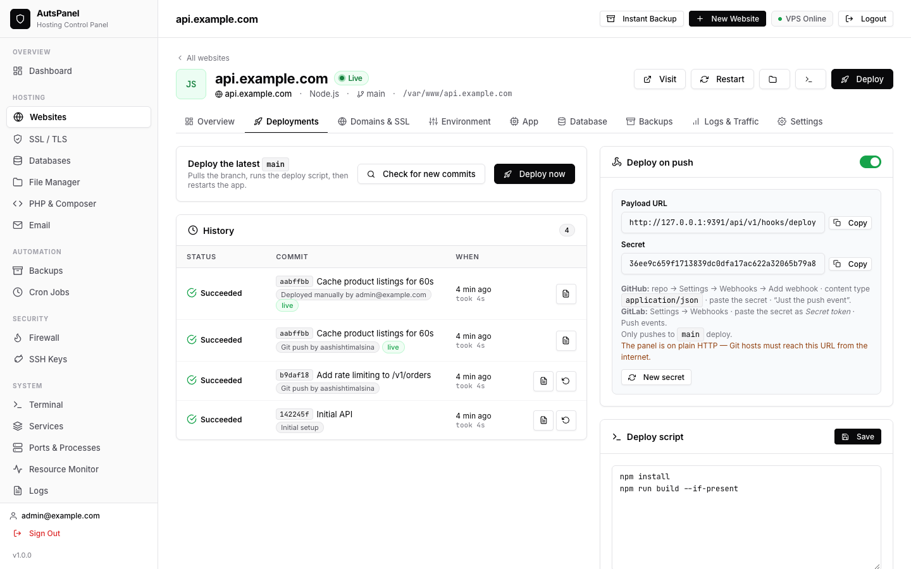

Git deployments
Every website created from Git can be deployed with one click or automatically on every push, and every deployment is kept with its log.
What a deployment does
- Pull — fetches the branch and fast-forwards to the newest commit.
- Composer — for PHP sites with a
composer.json; Composer is installed if missing. - Build — runs the website's deploy script, for example
npm ci && npm run build. - Permissions — gives PHP sites' writable folders to the web server user.
- Restart — reloads the PM2 app (PM2 is installed if missing).
- Health check — waits until the app answers on its port. If it crashed, the last lines of its error log are shown.
Click Deploy on the website page to start one. Only one deployment runs per website at a time; Check for new commits lists what the next deployment will bring.

Deploy on push
Open Deployments → Deploy on push and turn it on. AutsPanel shows a webhook URL and a secret:
https://panel.example.com/api/v1/hooks/deploy/<website-id>| Git host | Where to add it | Secret |
|---|---|---|
| GitHub | Repository → Settings → Webhooks → Add webhook. Content type application/json, event “Just the push event”. | Secret field (HMAC X-Hub-Signature-256) |
| GitLab | Project → Settings → Webhooks, trigger “Push events”. | Secret token field |
| Gitea / Forgejo | Repository → Settings → Webhooks → Gitea. | Secret field (HMAC) |
| Bitbucket | Repository settings → Webhooks, trigger “Repository push”. | Secret field (HMAC) |
Pushes to other branches are ignored, and a ping event is answered without deploying. If a push arrives while a deployment is running, one more deployment is queued to run right after it.
Webhook requests must reach the panel, so put the panel behind HTTPS on a domain first (see Installation). Click New secret if a secret ever leaks, and update it at your Git host.
The deploy script
Each website has an editable deploy script on its Deployments tab. It runs in the website folder with bash, and these variables are available:
| Variable | Value |
|---|---|
SITE_NAME | The website's name |
SITE_PATH | The website folder |
BRANCH | The deployed branch |
PORT | The website's app port (Node.js and Python apps) |
For PHP sites, php and composer run with the website's own PHP version. A Laravel example:
composer install --no-dev --optimize-autoloader
php artisan migrate --force
php artisan config:cache
php artisan route:cache
php artisan view:cacheHistory and rollback
The history lists every deployment with its trigger (manual, webhook or rollback), commit, author, duration and result; click one to read its full log. Roll back on an earlier successful deployment checks out that commit, builds and restarts. The next push or deploy moves forward again.
If files were changed directly on the server, a pull can fail. Tick Discard changes made on the server when deploying to reset the folder to the branch (git reset --hard) on every deployment.
Notifications
Under Settings → Notifications, add a Discord webhook or an email address to be told about successful and failed deployments and backups.
Frequently asked questions
Does AutsPanel support GitHub, GitLab and Bitbucket?
Yes. Push-to-deploy webhooks work with GitHub, GitLab, Gitea/Forgejo and Bitbucket. Public repositories work over HTTPS; private ones with a deploy key over SSH.
Is there zero-downtime deployment?
Mostly. The running app keeps serving while dependencies install and the new version builds, and it is restarted only when the build succeeds; a health check then confirms the new version answers. It is not a blue-green deployment: during the restart itself, requests can fail for a moment, and frameworks that build into the folder the app serves from (such as Next.js) may briefly serve errors while building.
Last updated 2026-10-19 · Improve this page on GitHub